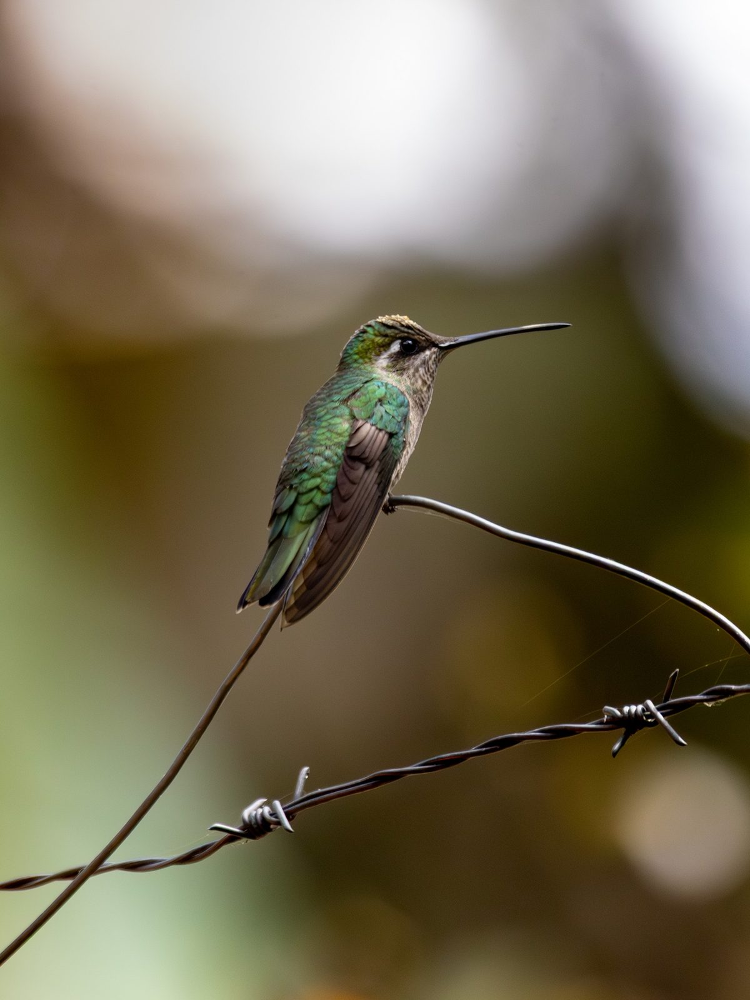

Colibríes de Guatemala
38 de las 363 especies de colibrí del mundo viven en Guatemala o lo visitan, entre ellas el Colibrí Corona Azul y el Colibrí Orejas Blancas.
Ver Guatemala en el explorador
Qué colibríes
Cuántas especies de cada grupo viven en Guatemala, del total de especies del grupo. El largo de la barra muestra el tamaño del grupo en el mundo.
El grupo más grande aquí: esmeraldas, con 18 especies. Aquí no hay brillantes ni Patagona.
Comparado con otros países
Guatemala ocupa el lugar 12.º entre los 55 países y territorios con colibríes. Ve cómo se compara Guatemala con todos los países.
Estado en la Lista Roja
- Preocupación menor 38
Ninguna de las especies de aquí está amenazada.
Tamaños
Desde el Colibrí Cola Pinta, de 2.2 g, hasta el Fandanguero Morado, de 9.7 g. La escala abarca toda la familia, de 1.9 a 20.2 g.
Visitantes · 1
Estas especies no se reproducen en Guatemala: pasan aquí el invierno, lo cruzan durante la migración o aparecen muy de vez en cuando.
- Colibrí Garganta Rubí visitante de invierno
Las 38 especies
Florisuginae topacios · 1
 Colibrí Capucha AzulFlorisuga mellivoraPreocupación menorFoto: Lia Guttman · CC BY 4.0
Colibrí Capucha AzulFlorisuga mellivoraPreocupación menorFoto: Lia Guttman · CC BY 4.0
Phaethornithinae ermitaños · 3
 Ermitaño Barbudo ColibandeadoThrenetes ruckeriPreocupación menorFoto: Michael Woodruff from Spokane, Washington, USA · CC BY-SA 2.0
Ermitaño Barbudo ColibandeadoThrenetes ruckeriPreocupación menorFoto: Michael Woodruff from Spokane, Washington, USA · CC BY-SA 2.0 Colibrí Ermitaño MesoamericanoPhaethornis longirostrisPreocupación menorFoto: Lia Guttman · CC BY 4.0
Colibrí Ermitaño MesoamericanoPhaethornis longirostrisPreocupación menorFoto: Lia Guttman · CC BY 4.0 Colibrí Ermitaño EnanoPhaethornis striigularisPreocupación menorFoto: Jerry Oldenettel from Socorro, NM, USA · CC BY-SA 2.0
Colibrí Ermitaño EnanoPhaethornis striigularisPreocupación menorFoto: Jerry Oldenettel from Socorro, NM, USA · CC BY-SA 2.0
.jpg){kind=link}

Polytminae mangos · 4
 Colibrí PardoColibri delphinaePreocupación menorFoto: Lia Guttman · CC BY 4.0
Colibrí PardoColibri delphinaePreocupación menorFoto: Lia Guttman · CC BY 4.0 Colibrí Orejas Violetas MexicanoColibri thalassinusPreocupación menorFoto: Frank Vassen from Brussels, Belgium · CC BY 2.0
Colibrí Orejas Violetas MexicanoColibri thalassinusPreocupación menorFoto: Frank Vassen from Brussels, Belgium · CC BY 2.0 Colibrí Hada EnmascaradaHeliothryx barrotiPreocupación menorFoto: MeegsC · CC BY-SA 3.0
Colibrí Hada EnmascaradaHeliothryx barrotiPreocupación menorFoto: MeegsC · CC BY-SA 3.0 Colibrí Garganta NegraAnthracothorax prevostiiPreocupación menorFoto: Dick Daniels (http://theworldbirds.org/) · CC BY-SA 3.0
Colibrí Garganta NegraAnthracothorax prevostiiPreocupación menorFoto: Dick Daniels (http://theworldbirds.org/) · CC BY-SA 3.0
,_Copey_de_Dota,_Costa_Rica_(3976502601).jpg){kind=link}

RWD.jpg){kind=link}
Lesbiini coquetas · 1
 Coqueta Cresta NegraLophornis helenaePreocupación menorFoto: Roger MacKertich · CC BY-SA 4.0
Coqueta Cresta NegraLophornis helenaePreocupación menorFoto: Roger MacKertich · CC BY-SA 4.0

Lampornithini mountain gems · 6

Colibrí MagníficoEugenes fulgensPreocupación menorFoto: Lia Guttman · CC BY 4.0 Colibrí Picudo CoroniazulHeliomaster longirostrisPreocupación menorFoto: Charles J. Sharp · CC BY-SA 4.0
Colibrí Picudo CoroniazulHeliomaster longirostrisPreocupación menorFoto: Charles J. Sharp · CC BY-SA 4.0 Colibrí Picudo OccidentalHeliomaster constantiiPreocupación menorFoto: Jerry Oldenettel · CC BY-SA 2.0
Colibrí Picudo OccidentalHeliomaster constantiiPreocupación menorFoto: Jerry Oldenettel · CC BY-SA 2.0 Colibrí Garganta VerdeLampornis viridipallensPreocupación menorFoto: Fernando Bautista · CC BY 4.0
Colibrí Garganta VerdeLampornis viridipallensPreocupación menorFoto: Fernando Bautista · CC BY 4.0 Colibrí Garganta AmatistaLampornis amethystinusPreocupación menorFoto: Adam Jackson · CC0
Colibrí Garganta AmatistaLampornis amethystinusPreocupación menorFoto: Adam Jackson · CC0 Colibrí MulticolorLamprolaima rhamiPreocupación menorFoto: Francesco Veronesi from Italy · CC BY-SA 2.0
Colibrí MulticolorLamprolaima rhamiPreocupación menorFoto: Francesco Veronesi from Italy · CC BY-SA 2.0
.jpg){kind=link}


_(cropped).jpg){kind=link}

Mellisugini abejas · 5
 Colibrí Cola PintaTilmatura dupontiiPreocupación menorFoto: Grete Pasch · CC BY 4.0
Colibrí Cola PintaTilmatura dupontiiPreocupación menorFoto: Grete Pasch · CC BY 4.0 Colibrí Tijereta GuatemaltecoDoricha enicuraPreocupación menorFoto: thibaudaronson · CC BY-SA 4.0
Colibrí Tijereta GuatemaltecoDoricha enicuraPreocupación menorFoto: thibaudaronson · CC BY-SA 4.0 Colibrí Garganta RubíArchilochus colubrisvisitante de inviernoPreocupación menorFoto: Lia Guttman · CC BY 4.0
Colibrí Garganta RubíArchilochus colubrisvisitante de inviernoPreocupación menorFoto: Lia Guttman · CC BY 4.0 Zumbador Cola AnchaSelasphorus platycercusPreocupación menorFoto: Michelle Lynn Reynolds · CC BY-SA 3.0
Zumbador Cola AnchaSelasphorus platycercusPreocupación menorFoto: Michelle Lynn Reynolds · CC BY-SA 3.0 Zumbador GuatemaltecoSelasphorus elliotiPreocupación menorFoto: William Stephens · CC BY 4.0
Zumbador GuatemaltecoSelasphorus elliotiPreocupación menorFoto: William Stephens · CC BY 4.0


Trochilini esmeraldas · 18
 Esmeralda OrientalCynanthus canivetiiPreocupación menorFoto: Brian Gratwicke · CC BY 2.0
Esmeralda OrientalCynanthus canivetiiPreocupación menorFoto: Brian Gratwicke · CC BY 2.0 Colibrí Orejas BlancasBasilinna leucotisPreocupación menorFoto: Seabamirum on Flickr · CC BY 2.0
Colibrí Orejas BlancasBasilinna leucotisPreocupación menorFoto: Seabamirum on Flickr · CC BY 2.0 Fandanguero MexicanoPampa curvipennisPreocupación menorFoto: Dominic Sherony · CC BY-SA 2.0
Fandanguero MexicanoPampa curvipennisPreocupación menorFoto: Dominic Sherony · CC BY-SA 2.0 Fandanguero CaneloPampa rufaPreocupación menorFoto: Joseph C Boone · CC BY-SA 4.0
Fandanguero CaneloPampa rufaPreocupación menorFoto: Joseph C Boone · CC BY-SA 4.0 Colibrí Pico CortoAbeillia abeilleiPreocupación menorFoto: thibaudaronson · CC BY-SA 4.0
Colibrí Pico CortoAbeillia abeilleiPreocupación menorFoto: thibaudaronson · CC BY-SA 4.0 Fandanguero MoradoCampylopterus hemileucurusPreocupación menorFoto: Lia Guttman · CC BY 4.0
Fandanguero MoradoCampylopterus hemileucurusPreocupación menorFoto: Lia Guttman · CC BY 4.0 Zafiro CoronadoThalurania colombicaPreocupación menorFoto: Joseph C Boone · CC BY-SA 4.0
Zafiro CoronadoThalurania colombicaPreocupación menorFoto: Joseph C Boone · CC BY-SA 4.0 Colibrí Cola RayadaEupherusa eximiaPreocupación menorFoto: Basar · CC BY-SA 3.0
Colibrí Cola RayadaEupherusa eximiaPreocupación menorFoto: Basar · CC BY-SA 3.0 Colibrí Pecho EscamosoPhaeochroa cuvieriiPreocupación menorFoto: Francesco Veronesi from Italy · CC BY-SA 2.0
Colibrí Pecho EscamosoPhaeochroa cuvieriiPreocupación menorFoto: Francesco Veronesi from Italy · CC BY-SA 2.0 Colibrí Frente VerdeRamosomyia viridifronsPreocupación menorFoto: Francisco Emilio Roldán Velasco · CC BY 4.0
Colibrí Frente VerdeRamosomyia viridifronsPreocupación menorFoto: Francisco Emilio Roldán Velasco · CC BY 4.0 Colibrí Corona AzulSaucerottia cyanocephalaPreocupación menorFoto: Dominic Sherony · CC BY-SA 2.0
Colibrí Corona AzulSaucerottia cyanocephalaPreocupación menorFoto: Dominic Sherony · CC BY-SA 2.0 Colibrí BeriloSaucerottia beryllinaPreocupación menorFoto: Charles J. Sharp · CC BY-SA 4.0
Colibrí BeriloSaucerottia beryllinaPreocupación menorFoto: Charles J. Sharp · CC BY-SA 4.0 Colibrí Cola AzulSaucerottia cyanuraPreocupación menorFoto: Hectonichus · CC BY-SA 4.0
Colibrí Cola AzulSaucerottia cyanuraPreocupación menorFoto: Hectonichus · CC BY-SA 4.0 Colibrí CaneloAmazilia rutilaPreocupación menorFoto: Charles J. Sharp · CC BY-SA 4.0
Colibrí CaneloAmazilia rutilaPreocupación menorFoto: Charles J. Sharp · CC BY-SA 4.0 Colibrí Vientre CaneloAmazilia yucatanensisPreocupación menorFoto: lwolfartist · CC BY 2.0
Colibrí Vientre CaneloAmazilia yucatanensisPreocupación menorFoto: lwolfartist · CC BY 2.0 Colibrí Cola CanelaAmazilia tzacatlPreocupación menorFoto: Lia Guttman · CC BY 4.0
Colibrí Cola CanelaAmazilia tzacatlPreocupación menorFoto: Lia Guttman · CC BY 4.0 Colibrí CándidoChlorestes candidaPreocupación menorFoto: Charles J. Sharp · CC BY-SA 4.0
Colibrí CándidoChlorestes candidaPreocupación menorFoto: Charles J. Sharp · CC BY-SA 4.0 Zafiro Garganta AzulChlorestes eliciaePreocupación menorFoto: Roger MacKertich · CC BY-SA 4.0
Zafiro Garganta AzulChlorestes eliciaePreocupación menorFoto: Roger MacKertich · CC BY-SA 4.0


.jpg){kind=link}
_JCB.jpg){kind=link}

.jpg){kind=link}


_Finca_El_Pilar_4.jpg){kind=link}

_in_flight_Los_Tarrales.jpg){kind=link}

_in_flight_Peten.jpg){kind=link}

Fuentes
Países y cómo usa cada especie cada país: BirdLife International DataZone, comparado con registros de eBird a través de GBIF. El conteo incluye todas las especies de la lista del país, como el mapa del explorador. Grupos: Dickinson y Remsen (2013) y McGuire et al. (2014). Peso: AVONET (Tobias et al. 2022, CC BY 4.0). Estado en la Lista Roja: BirdLife International, la autoridad de la Lista Roja de la UICN para las aves.